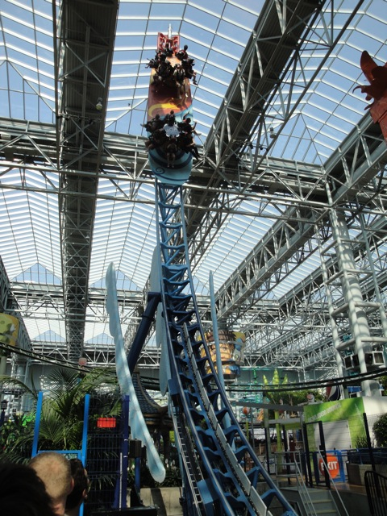
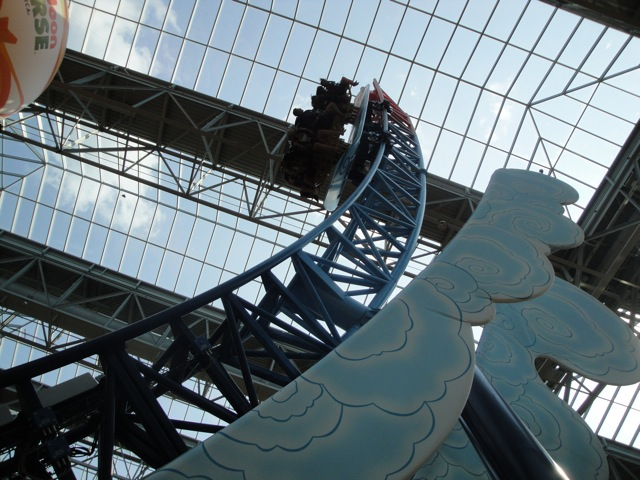
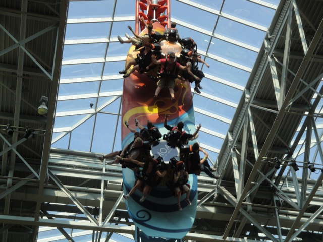

| |
Avatar Review

We're here at Nickelodeon Universe. Today's ride we'll be reviewing is Avatar. Now Avatar is an Intamin Half Pipe, which many people consider to be a flat ride, and not a credit. Well here, we count it as a credit. And while it's very impressive that they managed to fit a Half Pipe into a mall, Avatar is from photos I've seen, one of the smaller half pipes. But that doesn't matter as it's freaking awesome. After you get in the seats, you're off. You start of slowly not going very high nor very fast, but soon, you're flying up and down the track, gaining lots and lots of speed. And not only that, but this ride spins. And it spins you around A LOT!!!!!! As you're reaching the top of the tower, you get yanked up, glance at the sky before looking face down at the ground. Eventually, the ride does end, and while it's a tragedy, it is still a very awesome ride. I'd totally recommend it to anyone visiting Nickelodeon Universe. It's a really great ride.
8/10
Location: Nickelodeon Universe
Opened: 2008
Built by: Intamin
Last Ridden: August 5, 2010
Avatar Photos



Home
|